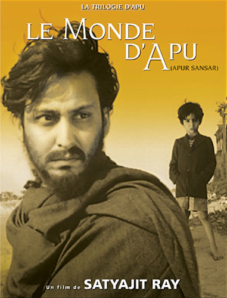
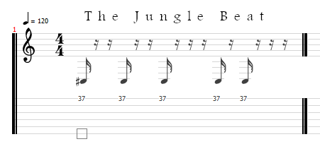
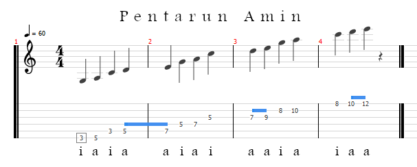

Comme je vous en raconte tellement et que les paroles s'envolent....
Je vais vous laisser quelques recommandations pour combler certaines lacunes.
Si, si, il faut combler. Parce que le chewing-gum des yeux (tous les écrans) ne suffit pas à élargir votre empan de connaissances.
Mes recommandations seront d'ordre littéraire, musicale, cinématographique, artistique, culinaire et au gré de nos conversations.
Oh Western Wind (Asaf Avidan & The Mojos - Through the Gale)
Comparée au reste de ses compositions cette chanson dénote et pourtant sa mélancolie apaise un peu la mienne.
Le monde d'Apu (Satyajit Ray)
C'est une trilogie, La Complainte du sentier (1955), l'Invaincu (1956) et le Monde d'Apu (1959). Là, comme beaucoup d'autres films dont je vous parlerai, les commentaires sont superflus. C'est des "a must-see" et puis c'est tout.

Le traité des cinq roues (Miyamoto Musashi)
Ce samouraï qui a vécu dans le Japon médiéval (1645) est mort paisiblement dans son lit. Mais avant de partir il s'est retiré du monde et a rédigé ce traité où il nous livre ses techniques. Techniques simples mais efficaces. Qui vont de la construction d'une charpente de maison au combat contre un adversaire, un groupe voire une armée.
Tout est stratégie et il faut vous affûter tous les jours.
The Jungle Beat
Si tu ne bouges pas là dessus, c'est que tu es encore au stade minéral.

Bo Diddley - Bo Diddley (1955)
Près de deux minutes de jungle beat. Attention ne regardez pas le joueur de maracas à gauche. Il pourrait vous scotcher. Petit plus, les maracas sont des instruments de la famille des idiophones. Hein ? Ouais t'as bien lu.
The Pipes of Pan at Jajouka - Your Eyes Are Like a Cup of Tea (Al Yunic Sharbouni Ate) - 1967 (Brian Jones)
On va faire court, les romains on colonisé le maghreb, ils ont importé dans leur bagages leurs croyances, c'est simple ils adoptaient tous les dieux qu'ils rencontraient (si c'est pas une preuve d'ouverture d'esprit...). En partant ils ont laissé quelques flûtes du dieu Pan, les locaux les ont intégrés dans leurs traditions. Un jour dans les 60's un membre des Rolling Stones les entends et decide de les faire connaître. Plus tard les Rolling Stone lui rendront un homage dans la chanson "Continental drift".
Sid Redad (Fadoul and The Privileges)
Un James Brown marocain dans les années 70, du Funk tendance Punk, ressentirons-nous à nouveau ce souffle de liberté ?
Le loup des steppes (Herrman Hesse)
Si tu es trop nombreux dans ta tête, n'oublie pas, c'est toi qui choisis qui tu es, quand tu veux.
Pentarun in A minor
Mets toi ça dans les doigts, très lentement, en aller retour (au médiator), régulièrement tous les jours. Je précise que je parle de guitare.

Chicken in The Corn (Brushy One String)
Donc comme lui, tu vas commencer avec une corde. Après je te présenterai Morphine, une batterie, un sax et une basse avec avec DEUX cordes.
Piment Scorpion Butch T
Quand on te dit que "c'était" le piment le plus fort au monde, t'es sûr que tu veux voir le plus fort ?
Vitamin C (Can)
De la vitamine de Krautrock vous m'en direz des nouvelles.
Les chroniques martiennes (Ray Bradbury)
Un recueil de nouvelles (existe en français) accessibles à tout le monde et ô combien touchant ! Resteras-tu insensible au destin des colons et des habitants de Mars ? N'oublie pas que cela a été écrit en 1950.